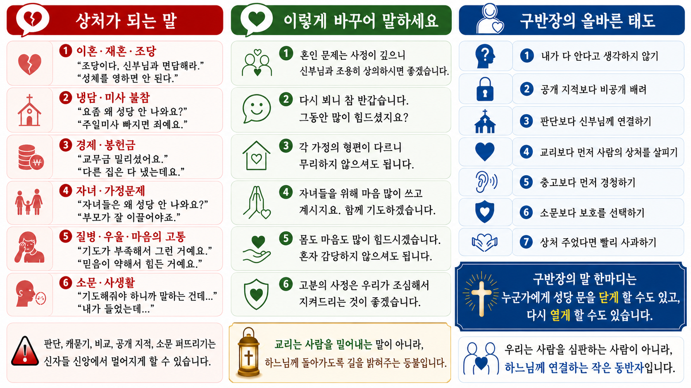

설득보다 환대,
지적보다 동행
올해의 주제는 “사람의 마음과 신앙”입니다. 구반장님의 작은 안부와 말 한마디가 누군가에게는 다시 성당으로 돌아오는 길이 될 수 있습니다.
김태영 사도요한 신부
작년에는 “돈과 신앙”,
올해는 “마음과 신앙”
돈은 삶의 현실을 보여 줍니다. 마음은 신앙의 깊은 자리를 보여 줍니다.
작년의 질문
신앙은 금융투자, 개인소유권, 상속, 경제생활과 무슨 관련이 있는가?
올해의 질문
신앙은 상처, 냉담, 비교, 자존감, 정보 혼란 속에서 사람을 어떻게 다시 일으키는가?
오늘의 핵심 문장
작은 동반자입니다.
구반장은 신자를 설득하는 사람이 아니라, 상처받은 사람이 다시 하느님 사랑 안에 머물 수 있도록 곁을 내어 주는 사람입니다.
구반장의 신학적 뿌리:
평신도 사도직
세례 받은 신자는 교회 안에서 수동적인 대상이 아니라, 그리스도의 사명에 참여하는 하느님 백성입니다.
구반장은
- 공지 전달자만이 아닙니다.
- 본당의 가장 가까운 신앙 이웃입니다.
- 신자와 공동체 사이의 작은 다리입니다.
그러므로
- 사람을 관리하기보다 살립니다.
- 출석을 확인하기보다 안부를 묻습니다.
- 정답을 주기보다 곁을 내어 줍니다.
근거: 제2차 바티칸 공의회 「교회 헌장」 31항, 「평신도 사도직 교령」.
사람은 하느님의 모상입니다
창세 1,27
신앙 안에서 자존감은 “내가 남보다 낫다”는 감정이 아닙니다. “나는 하느님께서 사랑으로 지으신 사람이며, 넘어져도 다시 돌아갈 수 있는 사람”이라는 믿음입니다.
구반장이 전할 복음적 메시지
“형제님, 자매님은 아직도 하느님께 소중한 분입니다.”
근거: 창세 1,27; 「가톨릭 교회 교리서」 357항, 1700항, 1934항.
비교와 냉담의 시대
신앙생활이 멈추는 이유는 게으름만이 아닙니다. 비교, 상처, 부담, 죄책감, 공동체 안의 말 한마디가 마음을 닫게 만들 수 있습니다.
비교
“저 사람은 열심한데 나는 왜 이럴까?”
상처
“성당에서 그런 말을 들을 줄 몰랐어요.”
부담
“나가면 또 봉사하라고 할까 봐 겁나요.”
근거: 로마 12장; 1코린 12장.
피해야 할 말:
맞는 말이 사람을 아프게 할 때
| 피해야 할 말 | 왜 조심해야 하나 |
|---|---|
| “그 정도는 누구나 겪어요.” | 상대의 고통을 가볍게 만들 수 있습니다. |
| “그래도 성당은 나와야죠.” | 의무만 남고 마음은 더 닫힐 수 있습니다. |
| “기도가 부족해서 그래요.” | 신앙을 죄책감으로 느끼게 할 수 있습니다. |
| “그 사람도 사정이 있었겠죠.” | 상처받은 사람의 마음이 무시될 수 있습니다. |
| “신부님께 가서 해결하세요.” | 너무 빨리 책임을 넘기는 느낌을 줄 수 있습니다. |
근거: 「가톨릭 교회 교리서」 2477-2478항; 적극적 경청과 심리적 응급처치 원칙.
살리는 말:
마음을 먼저 알아주는 언어
오랜만에 연락할 때
“오랜만에 생각이 나서 연락드렸어요. 부담 갖지 않으셔도 됩니다.”
상처를 들을 때
“그동안 많이 힘드셨겠어요. 말씀해 주셔서 고맙습니다.”
죄책감이 클 때
“하느님께 돌아가는 길은 늘 열려 있습니다.”
다시 오기 부담스럽다고 할 때
“처음에는 조용히 미사만 오셔도 괜찮습니다.”
상처를 줄일 수 있는 대화법

구반장의 현장 5단계
1. 보다
표정, 말수, 미사 참례 변화, 활동 중단을 살핍니다.
2. 듣다
중간에 끊지 않고 판단하지 않습니다.
3. 잇다
필요하면 신부님, 수녀님, 봉사자, 전문기관과 연결합니다.
4. 축복하다
그 사람 안의 장점을 발견해 말해 줍니다.
5. 확인하다
며칠 뒤 다시 안부를 묻습니다.
혼자 감당하지 않기
자해 암시, 폭력 피해, 심각한 우울, 경제 위기는 반드시 연결합니다.
AI와 유튜브 시대,
신앙 정보는 어떻게 분별할까?
오늘날 문제는 정보가 부족한 것이 아니라, 무엇을 믿어야 할지 모르는 것입니다.
조심해야 할 신호
- 자극적인 제목과 공포 조장
- 사적 계시의 과장
- 교황청 문헌 일부만 잘라 왜곡
- 확인되지 않은 기적·예언·음모론
구반장의 기본 태도
- 바로 공유하지 않기
- 출처 확인하기
- 교회 가르침과 맞는지 보기
- 필요하면 사제에게 확인하기
근거: 교황청 「Antiqua et nova」; 프란치스코 교황 2024년 세계 평화의 날 담화와 홍보 주일 담화; UNESCO 미디어·정보 리터러시.
구반장용 신앙 정보 확인 5문장
1
이 자료의 출처가 분명한가?
2
성경, 교리서, 교황청·주교회의 자료와 어긋나지 않는가?
3
공포와 분노를 지나치게 자극하지 않는가?
4
누군가를 혐오하거나 단죄하게 만들지 않는가?
5
확인하기 전에 공유하고 있지는 않은가?
권장 표현
“좋은 뜻으로 보내주신 것 같아요. 다만 신앙 자료는 확인하고 공유하면 더 안전합니다.”
상황별 대화 연습
구반장님들이 바로 기억할 한 장
현장 5단계
기억할 말씀
- 창세 1,27 — 사람은 하느님의 모습입니다.
- 요한 13,34 — 서로 사랑하여라.
- 갈라 6,2 — 서로 남의 짐을 져 주십시오.
권장 표현
- “요즘 어떻게 지내세요?”
- “부담 갖지 않으셔도 됩니다.”
- “많이 힘드셨겠어요.”
- “하느님께 돌아가는 길은 늘 열려 있습니다.”
- “처음에는 조용히 미사만 오셔도 괜찮습니다.”
소그룹 나눔 질문
- 내가 신앙생활 중 들었던 말 가운데 가장 위로가 되었던 말은 무엇인가?
- 선의였지만 마음을 아프게 했던 말은 무엇인가?
- 냉담 교우에게 연락할 때 내가 가장 두려워하는 것은 무엇인가?
- 우리 구역에서 “환대받는 느낌”을 주기 위해 바로 할 수 있는 작은 행동은 무엇인가?
- 유튜브나 카카오톡으로 받은 신앙 정보를 공유하기 전에 확인해야 할 것은 무엇인가?
- 내가 발견해 주고 싶은 우리 구역 신자들의 장점은 무엇인가?
마무리 기도
주님, 저희를 본당 공동체의 작은 일꾼으로 불러 주셔서 감사합니다.
저희가 전하는 말이 누군가를 판단하는 말이 아니라 다시 일으켜 세우는 말이 되게 하소서.
상처받은 이를 만날 때 성급히 가르치기보다 먼저 듣게 하시고, 냉담한 이를 만날 때 책망하기보다 따뜻이 맞이하게 하소서.
비교로 지친 이들에게는 하느님께서 주신 고유한 아름다움을 발견해 주게 하시고, 죄책감으로 움츠러든 이들에게는 주님의 자비가 더 크다는 희망을 전하게 하소서.
AI와 수많은 정보의 시대에 저희가 진리를 사랑하고, 교회의 가르침 안에서 지혜롭게 분별하며, 거짓과 두려움이 아니라 복음의 평화와 사랑을 전하게 하소서.
주님, 저희의 작은 안부, 작은 미소, 작은 말 한마디가 누군가에게 다시 성당으로 돌아오는 길이 되게 하소서.
우리 주 그리스도를 통하여 비나이다. 아멘.
참고문헌과 출처
배포용 자료에는 아래 출처를 함께 실어, 구반장님들이 자료의 근거를 확인할 수 있게 했습니다.
성경
- 한국천주교주교회의, 「성경」: 창세 1,27; 루카 15장; 요한 13,34-35; 로마 12장; 갈라 6,2; 1요한 4,1; 마태 25장.
교회 문헌
- 「가톨릭 교회 교리서」 357항, 1700항, 1934항, 2477-2478항.
- 제2차 바티칸 공의회 「교회 헌장」 31항.
- 제2차 바티칸 공의회 「평신도 사도직 교령」.
- 프란치스코 교황, 「복음의 기쁨」.
- 교황청, 「Antiqua et nova」.
사목·심리·미디어 자료
- IFRC, Psychological First Aid: Look, Listen, Link.
- APA Dictionary of Psychology, Active Listening.
- UNESCO, Media and Information Literacy.
- 한국 천주교회 통계 2025 관련 보도와 분석.
확인 필요
“구반장”의 구체적 직무와 명칭은 교구·본당 운영 지침에 따라 다를 수 있습니다. 인천교구 또는 남동지구의 공식 직무 규정이 있다면 배포 전 추가 반영이 필요합니다.